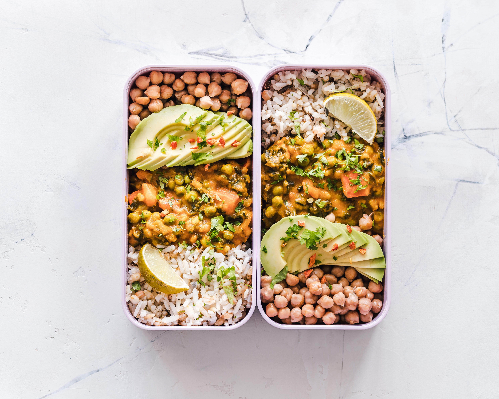

BentoBox Prep

Description
This is my favorite meals, called a BentoBox, its like already made and portion sized meals that can be
fruits or veggies or even differnt kinds of meat along side yor main dish.
Whats in it
- Chicken Teriyaki
- Mixed Tempura
- California roll
- Avocado
- Unagi
- Egg
- Rice
Steps in Prearing
- Cook each item indivually
- Cut up the avocado
- Have a good portion of rice
- Maybe include some soysauce for the sushi
- Enjoy!